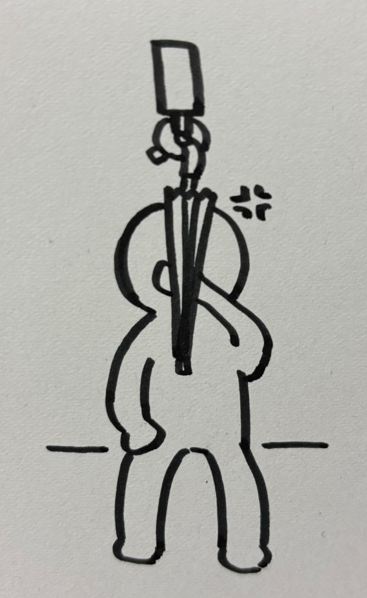
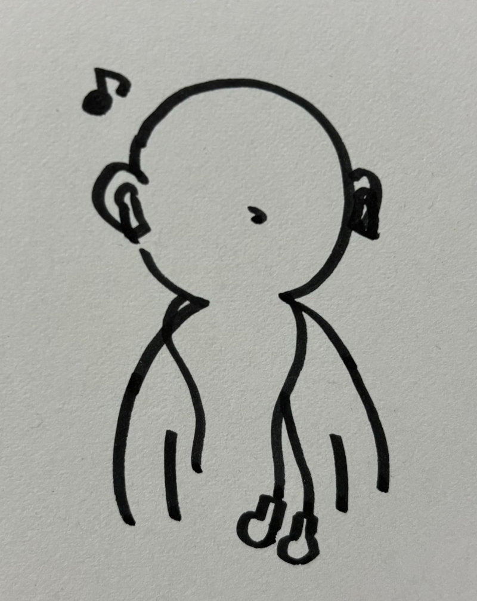

第三回 観察課題

傘にイライラしてる人
席が沢山空いてる時間の電車内で目の前に座っていたおじさんが、自分の傘を吊革に引っかけていたが、それが邪魔なのか手で傘をどけながら荷物を漁っていました。 端の席に座っていたので横の持ち手部分に傘をかければ良いのにと思いました。

イヤホン2個
最近オシャレなのか有線のイヤホンを首にかけている人を見かけることがあるが、有線のイヤホンがあるならワイヤレスイヤホンは使わなくてもいいんじゃないかなと思いました。

リュックの紐の長さが違う人
左右の紐の長さが違うリュックを背負っている人を見かけた。大きめのリュックだったので紐が短い方の肩は痛くならないのかな？と思いました。